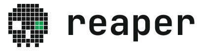

a linux tui for listing & killing listening ports
three listening, one about to not be. search with /,
sort with s, kill with ⏎ — always behind a confirm.
linux only — reaper reads /proc directly. run with
sudo to see and kill other users' processes.